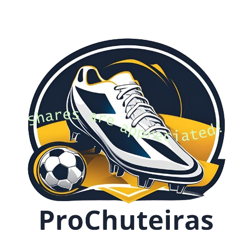

Com o Chuteira Mania você consegue ter acesso a chuteiras ilimitadas e de alta qualidade! Com o combo, o CMMax e CMPremium são inclusos por um preço único. Não perca essa oportunidade!
 Assine por 12x de R$150,00* Assine só o CMMax (pobre)*Quem leu é gay
Produtos Disponiveis
Chuteira Umbro Pro 5 Bump Dragon Year Futsal Vermelha
Está na hora de criar a sua própria lenda nas quadras de futsal com nova a chuteira da Umbro, modelo Pro 5 Bump. Celebrando o Ano Novo Chinês do Dragão, o calçado traz elementos que representam a cultura chinesa e o misticismo por trás da famosa figura.
R$649,90
Chuteira Futsal Umbro Pro 5 Bump
Descubra sua melhor versão dentro das quadras com a Chuteira de Futsal Umbro Pro 5 Bump. Diferenciais: - Tecnologia BUMP na palmilha e entressola para amortecimento e retorno de energia - Cabedal (assimétrico) construído em couro natural com costura posicionada - Biqueira de reforço em camurça na área frontal - Mesh fusionado com laminado para respirabilidade
R$479,90
Chuteira Futsal Umbro Pro 5 Bump Club
Dê o seu melhor dentro das quatro linhas com a Chuteira de Futsal Umbro Pro 5 Bump Club. Diferenciais: - Tecnologia BUMP na palmilha para amortecimento e retorno de energia - Cabedal (assimétrico) construído em material laminado com textura emborrachada - Detalhes em verniz com costura frontal para reforço
R$399,99
Chuteira Futsal Nike Tiempo Legend 9 Pro Branco e Laranja
A VB Sports apresenta a mais nova tecnologia em chuteiras para futsal: a Chuteira Futsal Nike React Tiempo Legend 9 Pro. Desenvolvida especialmente para os jogadores de futsal, essa chuteira oferece conforto e desempenho superior em quadras indoor.
R$389,90

Chuteira Adidas Predator Accuracy 23.1 FG Campo Preta e Pink
A tecnologia de alta definição com aderência estrategicamente posicionada é localizada nas zonas de impacto, ajudando na precisão do passe e da colocação da bola. O cabedal HYBRIDTOUCH oferece ajuste moldado com amortecimento nas principais áreas de contato para maior conforto e toque suave na bola, enquanto o Facetframe foi desenvolvido para otimizar a transferência de energia para um chute perfeito.
R$1799,90
Chuteira de Campo NIKE Air Zoom Mercurial Superfly 9 Elite SG-PRO CR7 Azul/Branco
Incline instantaneamente o campo com o design arrojado do Superfly 9 Elite. Adicionamos uma unidade Zoom Air, feita especificamente para o futebol, e textura aderente na parte superior para um toque excepcional, para que você possa dominar nos minutos finais de uma partida - quando mais importa. É leve e rente ao chão, então você sentirá que está flutuando pelas pontas da grama enquanto corre de uma zona para outra.
R$539,90

Chuteira X Speedflow+ Campo
Quando a sagacidade instintiva flui em ritmo alucinante, o gramado torna-se o seu playground. Encontre o seu ritmo de jogo com a adidas X. Esta chuteira sem cadarço foi desenvolvida com foco na velocidade de pensamento e dos pés. O aplique de fibra de carbono Carbitex e a biqueira elevada ajudam a atingir acelerações explosivas, enquanto a Agilitycage prende o pé com firmeza para dribles e passes de mestre. O revestimento em adidas Primeknit garante conforto e estilo.
R$1799,99
Chuteira Nike Mercurial Zoom Vapor 15 Elite FG - Campo
Pela primeira vez em nossa história, a Nike desenvolveu uma unidade Zoom Air de 3/4 de comprimento específico para o futebol totalmente nova. Quando seu pé toca o chão, as fibras se comprimem para amortecer o impacto antes de retornar rapidamente ao seu estado original, gerando uma resposta explosiva e poderosa do chão. Ranhuras flexíveis permitem que a unidade se movimente com o seu pé para uma sensação natural.
R$1999,90
COMPRE SUAS CHUTEIRAS DE ALTA QUALIDADE E SE TORNE UM BRUXO DO FUTEBOL!
Se você é apaixonado por futebol, sabe como uma boa chuteira pode transformar seu jogo. Investir em uma chuteira de qualidade não só melhora seu desempenho em campo, mas também proporciona conforto e proteção para os seus pés. Imagine-se driblando adversários com confiança, sentindo a aderência perfeita e a leveza que uma chuteira adequada pode oferecer. Além disso, com designs modernos e cores vibrantes, você ainda se destacará no jogo. Não deixe essa oportunidade passar! Escolha uma chuteira que combine com seu estilo e que te faça sentir imbatível. A cada partida, você notará a diferença e, com certeza, suas jogadas vão se tornar ainda mais memoráveis. Vamos lá, é hora de elevar seu futebol!
ASSINA LOGO SEU POBREDISPONIVÉL NOS MEUS DISPOSITÍVOS FAVORITOS! ATÉ NO NOKIA TIJOLÃO 🥶
-

TV
-

NOTEBOOK
-

CELULAR
-

TABLET